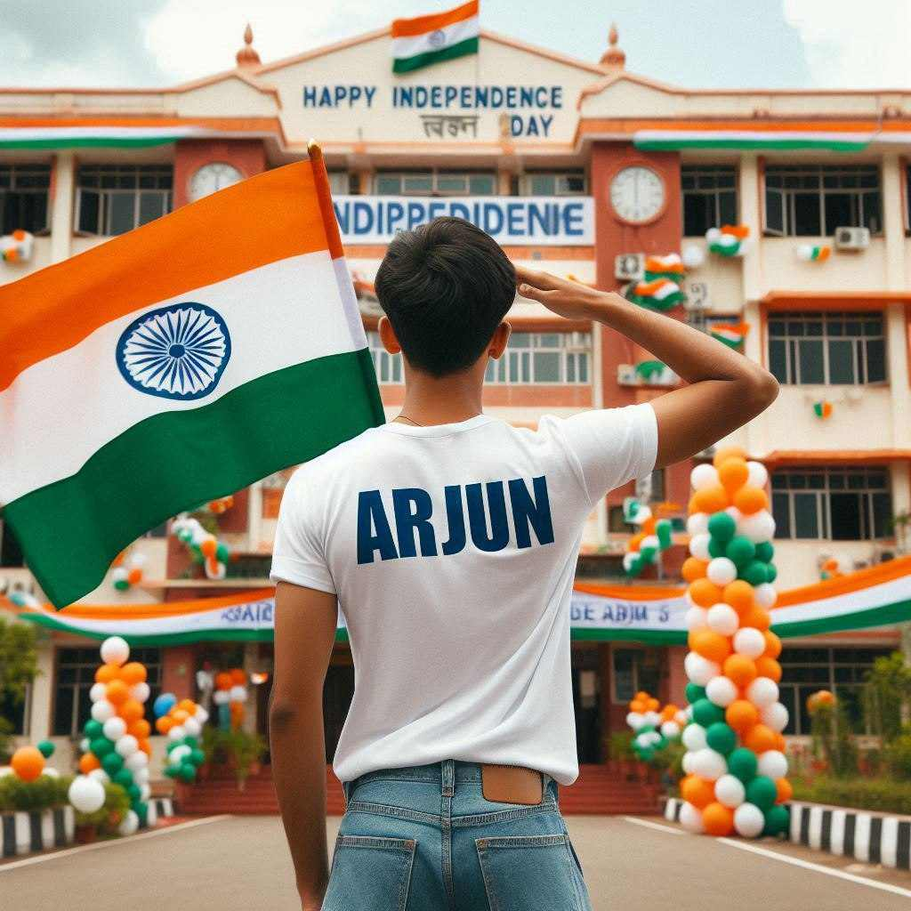

WhatsApp Group (Join Now)
Join Now
Telegram Group (Join Now)
Join Now
Jay Hind Friends. One of the most special and memorable days for India is 15th, August 1947 because we get freedom from British rule on that day.
As we know on every 15th August we celebrate that day with full joy and prosperity. Every school, institution, government place, and every citizen of India celebrates Independence Day.
Indepemdence Day Prompts For Boys
Want more awesome prompts?
Join our community and get the latest viral prompts daily.
Follow on Instagram
? AI PROMPT
A real 20-year-old boy joyfully celebrates Indian Independence Day. He is wearing traditional Indian outfits with the name "Ajay" written on his attire. Above him, in the sky, the words "Happy Independence Day" are displayed in a bold font. The backdrop is filled with people celebrating, enhancing the festive and patriotic spirit of the day.

? AI PROMPT
A real 20 years old boy, Wearing Orange T shirt blue jeans sneakers and the name "Salman Khan" is written on his t-shirt and the boy is standing on the road with holding a national flag of India, and behind him is the India gate Delhi. And "Happy Independence Day 2024" written at above sky Create Realistic image high quality.

? AI PROMPT
A real 20 year old boy , wearing a white "Salman Khan" T-shirt stands in front of a house decorated with Indian flags and tricolor balloons, saluting for an upcoming Independence Day celebration. The house has a large banner that reads "HAPPY INDEPENDENCE DAY 2024 and make sure text should be correct.

? AI PROMPT
A young boy stands proudly under a clear blue sky, celebrating Independence Day on August 15th, 2024. He is wearing a vibrant tricolor T-shirt with his name "Salman Khan" printed on the back, along with a large image of the Ashoka Chakra. The sky above him features the words "Happy Independence Day 2024" in bold, festive letters. Indian flags are flying around him, and a sense of national pride fills the air as he salutes, symbolizing his love for the country.

? AI PROMPT
A real 20-year-old boy joyfully celebrates Indian Independence Day. He is wearing traditional Indian outfits with the name "Salman Khan" written on his attire. Above him, in the sky, the words "Happy Independence Day" are displayed in a bold font. The backdrop is filled with people celebrating, enhancing the festive and patriotic spirit of the day.

? AI PROMPT
In a bustling town square, 18-year-old Vikram salutes the Indian flag as it's being hoisted. He's wearing a saffron t-shirt with "VIKRAM" embroidered in green on the sleeve. Around him, a diverse group of children wave small flags. A decorative arch in the background says "Happy Independence Day". 4K image.

? AI PROMPT
A patriotic 18-year-old boy named Arjun stands proudly in front of his school, saluting the Indian tricolor flag. He's wearing a white t-shirt with "ARJUN" printed on the back in bold blue letters. The school building is decorated with orange, white, and green balloons. A large banner reads "HAPPY INDEPENDENCE DAY" in the background. 4K image.
Independence Day Prompts For Girls

? AI PROMPT
A real 20 year old girl , wearing a white "Anjali" T-shirt stands in front of a house decorated with Indian flags and tricolor balloons, saluting for an upcoming Independence Day celebration. The house has a large banner that reads "HAPPY INDEPENDENCE DAY 2024 and make sure text should be correct.

? AI PROMPT
A real 20-year-old girl joyfully celebrates Indian Independence Day. she is wearing traditional Indian outfits with the name "Payal" written on her attire. Above her, in the sky, the words "Happy Independence Day" are displayed in a bold font. The backdrop is filled with people celebrating, enhancing the festive and patriotic spirit of the day.make sure text should be correct.

? AI PROMPT
A real 20-year-old girl joyfully celebrates Indian Independence Day. she is wearing traditional Indian outfits with the name "Nisha" written on her attire. Above her, in the sky, the words "Happy Independence Day" are displayed in a bold font. The backdrop is filled with people celebrating, enhancing the festive and patriotic spirit of the day.

? AI PROMPT
A real 20-year-old girl celebrates Indian Independence Day. she is wearing white kurti outfits with the name "pooja" written on her attire. Above her, in the sky, the words "Happy Independence Day" are displayed in a bold font. The backdrop is filled with people celebrating, enhancing the festive and patriotic spirit of the day.

? AI PROMPT
In a college campus, 20-year-old Priya (spelled P-R-I-Y-A) leads a group of students in saluting the national flag as it's being hoisted. Priya is wearing a crisp white saree with a tricolor border. Her blouse has "PRIYA" printed in elegant gold letters. The college building behind is adorned with lights forming "15th August 2024". 4K image.
Independence Day Prompts For Couples

? AI PROMPT
real young couple, Ajay and Pooja stand together, both 20 years old, joyfully celebrate Indian Independence Day. They are wearing indian outfits and Ajay name is written on boy's outfit and Pooja written on girl's outfit. Above them, in the sky, the words "Happy Independence Day" are displayed in a bold font. The backdrop is filled with people celebrating, enhancing the festive and patriotic spirit of the day.make sure text should be correct.

? AI PROMPT
A silhouette of a person stands against a large, illuminated circle featuring the Indian flag colors (saffron, white, and green) and the Ashoka Chakra in the center. Below the circle, the Text "Vishal" is displayed in bold, stylized letters: orange S, gray A, white M, and green IR. The shiny floor reflects the vibrant colors, typography, 3d render
Steop To Create Independence Day AI Image
If you want to create image and want to learn Image editing check our article on how to create images from Bing Image Creator.
- First Copy any prompt from the above given prompts.
- After that Click on the below Button (Bing Image Creator)
- You will redirected to Bing AI Creator
- Sign Up or Sign In on Bing Image Creator
- Paste that Prompt in the prompt box
- Click on the “Create” button
- Now “Download” image.